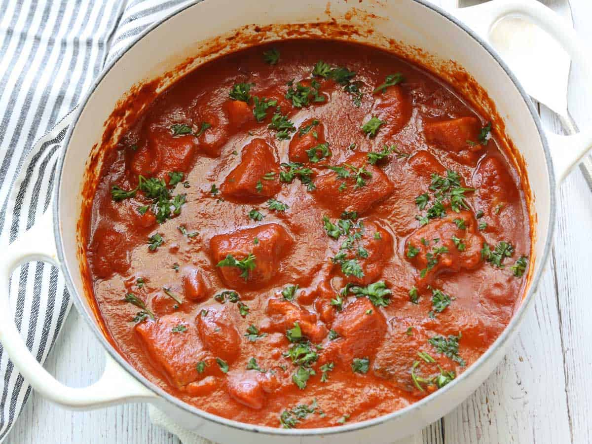

Spicy Fish

Description
This wonderfully flavorful spicy fish stew is one of my favorite ways to incorporate more fish into my diet.
Ingredients
- 2 tablespoons olive oil
- 1 tablespoon minced fresh garlic
- salt as required
- 1 tablespoon sweet paprika
- 1 teaspoon ground cumin
- 1 teaspoon ginger paste
- 2 teaspoon coriander powder
- 1 cup water
- 2 teaspoon cumin powder
- 2 cod fillets cut into 2-inch chunks
- 2 salmon fillets cut into 2-inch chunks
- 2 tablespoons chopped parsley or cilantro
- ½ teaspoon crushed red peppers
- 1 teaspoon coriander
Steps
- Heat the olive oil in a large, heavy saucepan over medium heat. Add the garlic and spices. Cook, stirring, for 30 seconds.
- Whisk in the tomato sauce and kosher salt. When the mixture starts to boil, add the fish pieces, spooning the sauce on top to cover them. Bring back to a gentle boil.
- Cover (use heavy-duty foil if your skillet does not come with a lid), lower the heat to medium-low, and cook until the fish is cooked through, about 15 minutes. Garnish with parsley and serve.